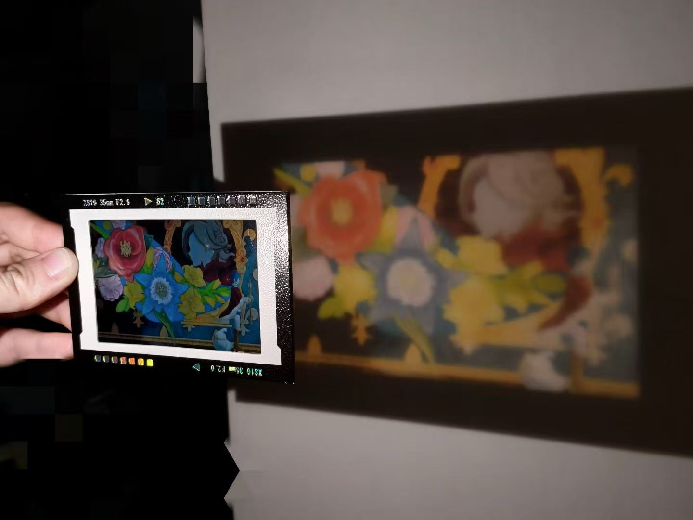
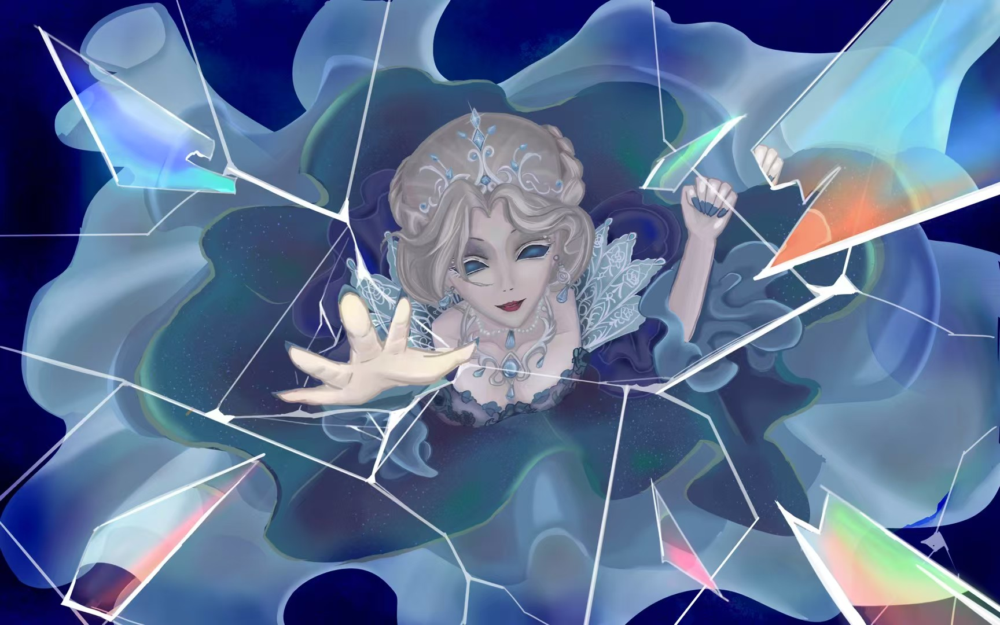
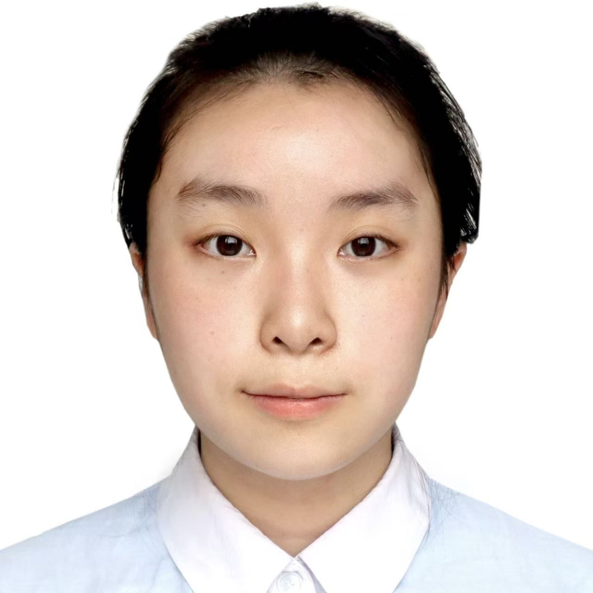

Hobbies & Interests
绘画与周边制作
有超过十年的绘画经验，喜欢在业余时间进行绘画，并研究工艺、制作周边。有良好的艺术审美和修养，了解“谷子”经济的全链路流程，熟悉二次元落地实体经济的案例和客户需求。
美妆与时装
喜欢研究美妆与时尚领域，熟悉年轻群体的时尚流行和部分亚文化领域，了解相关产业消费需求和热点。





Xu Cirou / June
上海交通大学计算机科学与技术专业2023级在读。二次元文化热爱者，从小热爱像素风解密游戏。最喜欢的游戏是《魔女之家》，最爱的动漫是作为启蒙番的《赤发白雪姬》。我是原神深度用户，希望能通过二次元让更多人找到存在的意义、收获爱与温暖。
参与 LSGQuant: Layer-Sensitivity Guided Quantization (ICML 2026)，以及 Real-World Video Super-Resolution with One-Step Diffusion (IEEE TPAMI 在投) 的工作。
设计代码修复、自动化研报等 5 类模拟真实业务场景的 Agent 评测基准。构建复杂长文本 Prompt 模板，完成 15 轮次以上的 Agent Loop 测试，总结出 Token 溢出、执行幻觉等核心问题并形成报告。
重构数据生成流程的 Prompt 约束条件，引入强制 JSON 字典模板，将废片率从 91.1% 降低至 6.67%。独立编写评估脚本，引入第三方 LLM 作为裁判，建立量化打分逻辑。
有超过十年的绘画经验，喜欢在业余时间进行绘画，并研究工艺、制作周边。有良好的艺术审美和修养，了解“谷子”经济的全链路流程，熟悉二次元落地实体经济的案例和客户需求。
喜欢研究美妆与时尚领域，熟悉年轻群体的时尚流行和部分亚文化领域，了解相关产业消费需求和热点。

